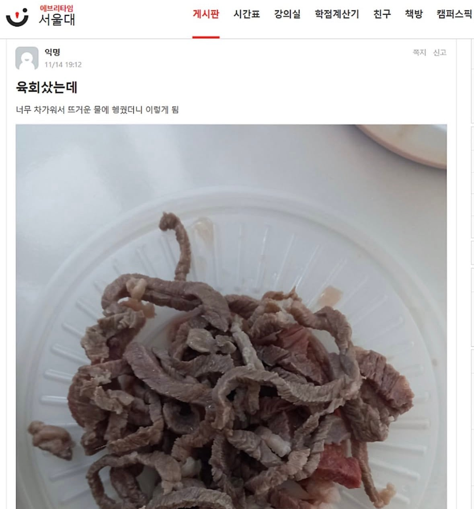

이게 한국 최고의 지성이 맞냐고

이게 한국 최고의 지성이 맞냐고
역시 서울 최고 명문 낙성대학교
옆동네 인천은 최고 명문 능허대학교
이상준 교수 제자구만 저거. 에휴.. 콩 심은데 콩 난거지 뭐~
라쿤급 지능
안경 써서 들어갔나?
뭣

저새끼 ai치팅친놈이다 잡아라
수육냥이
여섯번만 헹궈 먹어야 함
적당히 반숙으로 익힌게 영양가치는 더 있는거 아니냐? 역시 서울대는 머리가 좋아 ㅋㅋㅋㅋㅋ
데쳐먹는게 안전하지ㅋㅋ
어디 미개하게 날것을 먹나!
근데 고깃집에서 육회시켜서 타다끼마냥 겉에만 살짝 불판에 익혀서먹으면 맛있더라 감칠맛 조와
진선규씨 개드립하십니까
ㅇㅈ
그냥 국수 끓여서 고기국수 고명으로 올려라..ㅋㅋㅋ
걍 라면에 넣어 먹든가. ㅎㅎㅎ
그럴거면 홍두께살을 뭐하러 2만원에 삿단말이냐이
미역국에 넣어 먹어라 ㅋㅋ
아아 그것은 '익었다'는것이다
단백질의 변형이 일어난것이지
Ai 썼는지 당장 조사하라
샤브샤브다 생각하고 먹어
길쭉하니 잡채에 넣자
타다키다 ㅅㄲㅇ
공부잘하는거랑 저런거랑 별개더라
그냥 '공부'만 잘하는 케이스 많이봄 ㅋㅋ
그냥 문제랑 정답 잘 외운 청년
솜사탕씻어먹는 너굴맨
낙성대 아님?